Plot a mortaar_life_table or a mortaar_life_table_list. There are several different kinds of plots
to explore the different variables. The parameter display allows to select the variables
of interest.
Arguments
- x
a mortaar_life_table or a mortaar_life_table_list.
- display
a character vector. Displays the calculated variables as plots. These must include some of the alternatives
dxfor the proportion of deaths,qxfor the probability of death,lxfor the survivorship,exfor the life expectancy andrel_popxfor the population age structure.- line_vis
optional string. Differentiate groups either by "linetype" or by "color". Default to "linetype".
- prefer.ggplot
should ggplot be preferred, if available. Default to TRUE.
- ...
further arguments passed to or from other methods.
Examples
# Create a mortaar_life_table from a prepared dataset.
schleswig_1 <- life.table(schleswig_ma[c("a", "Dx")])
plot(schleswig_1)
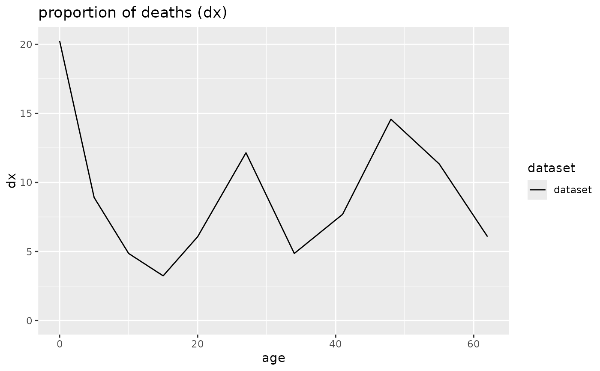

 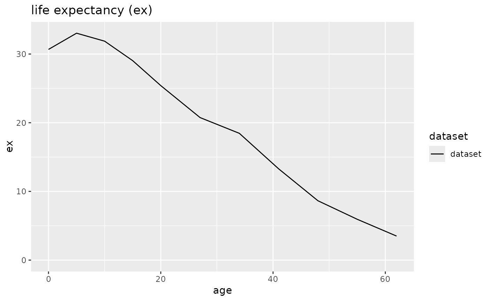
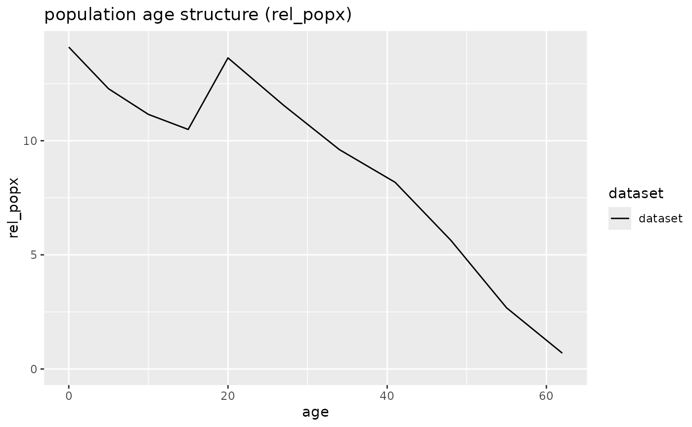
plot(schleswig_1, display = "qx")
# Create a mortaar_life_table_list from two datasets.
odagsen <- life.table(list(
"corpus mandibulae" = odagsen_cm[c("a", "Dx")],
"margo orbitalis" = odagsen_mo[c("a", "Dx")]
))
plot(odagsen)
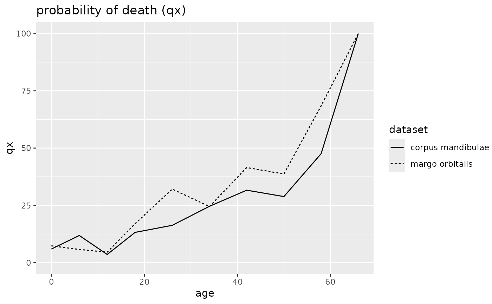
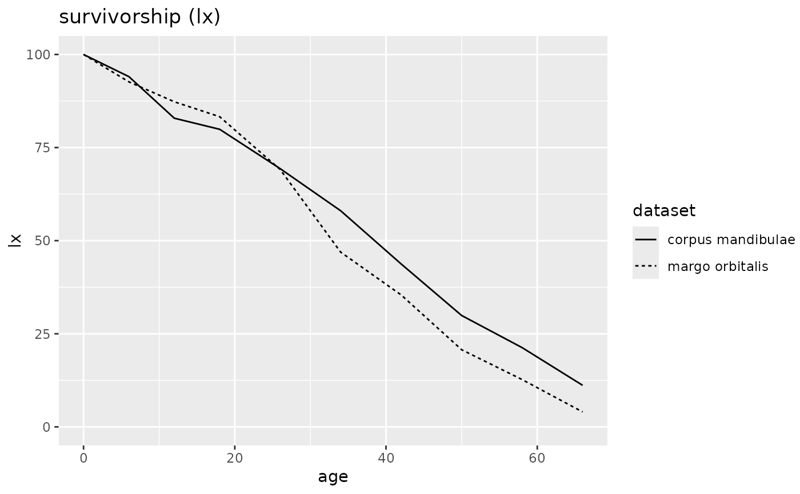
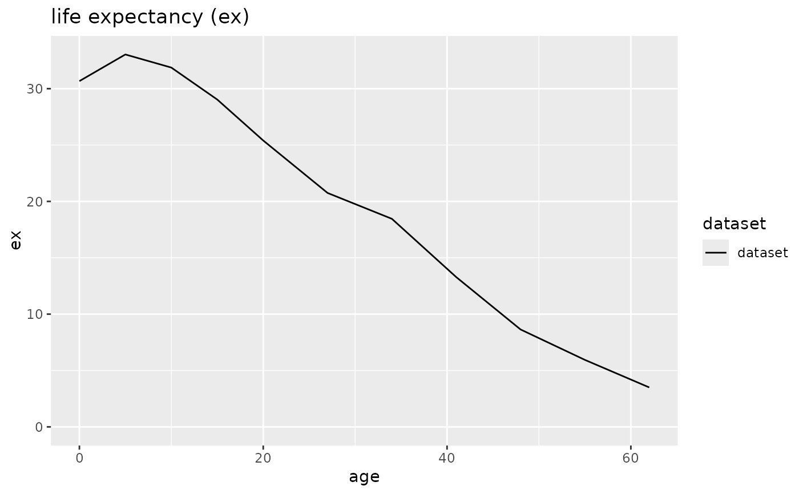
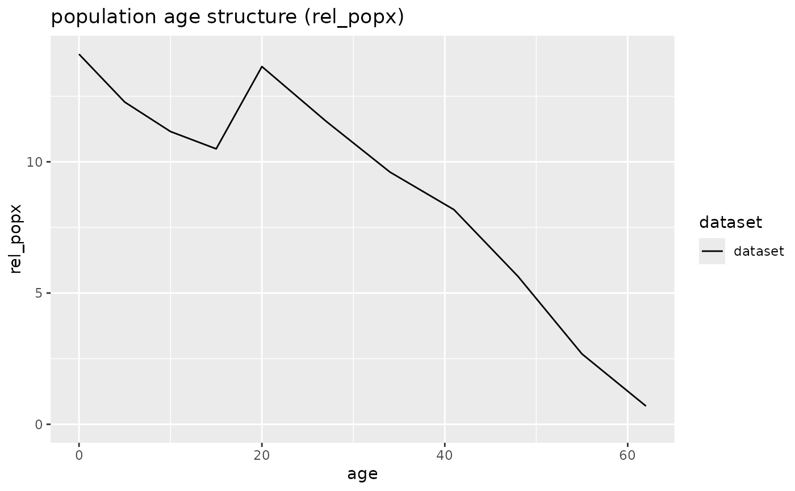
plot(schleswig_1, display = "qx")
# Create a mortaar_life_table_list from two datasets.
odagsen <- life.table(list(
"corpus mandibulae" = odagsen_cm[c("a", "Dx")],
"margo orbitalis" = odagsen_mo[c("a", "Dx")]
))
plot(odagsen)
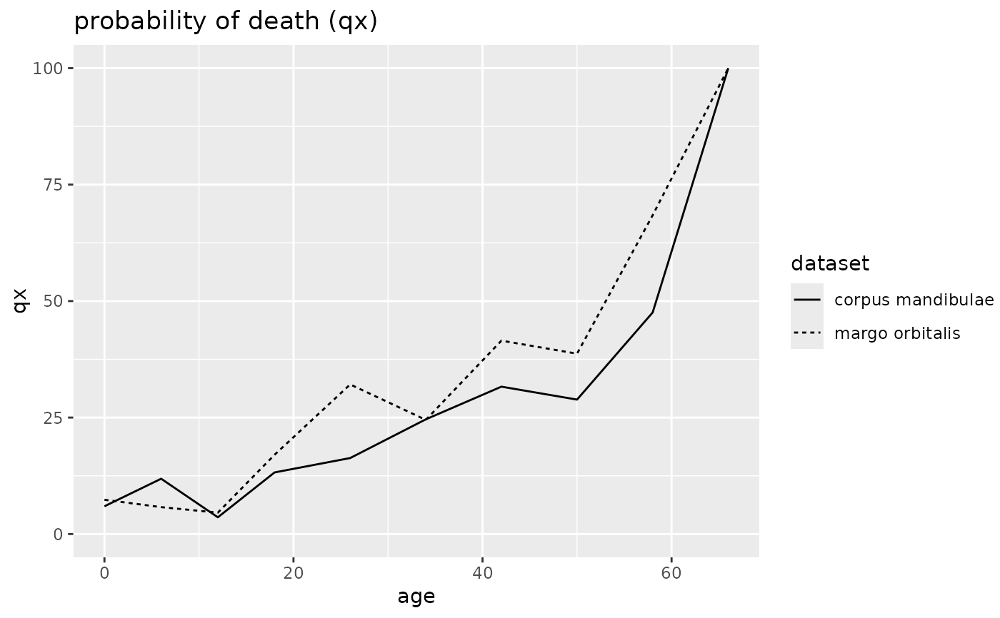
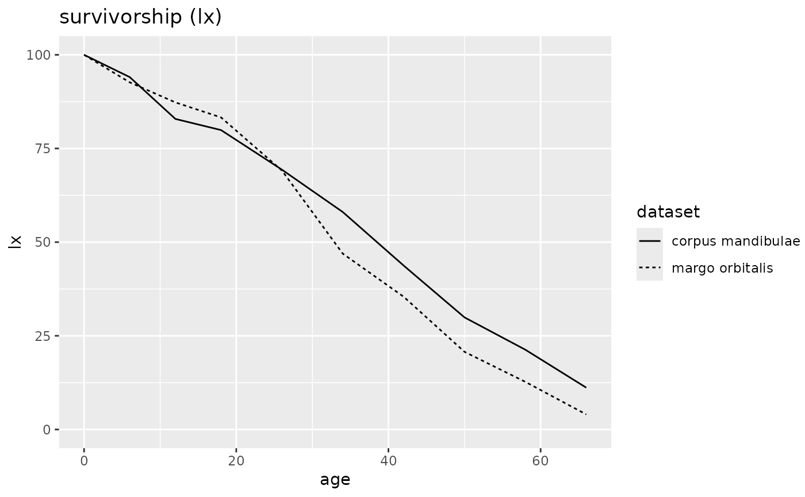
 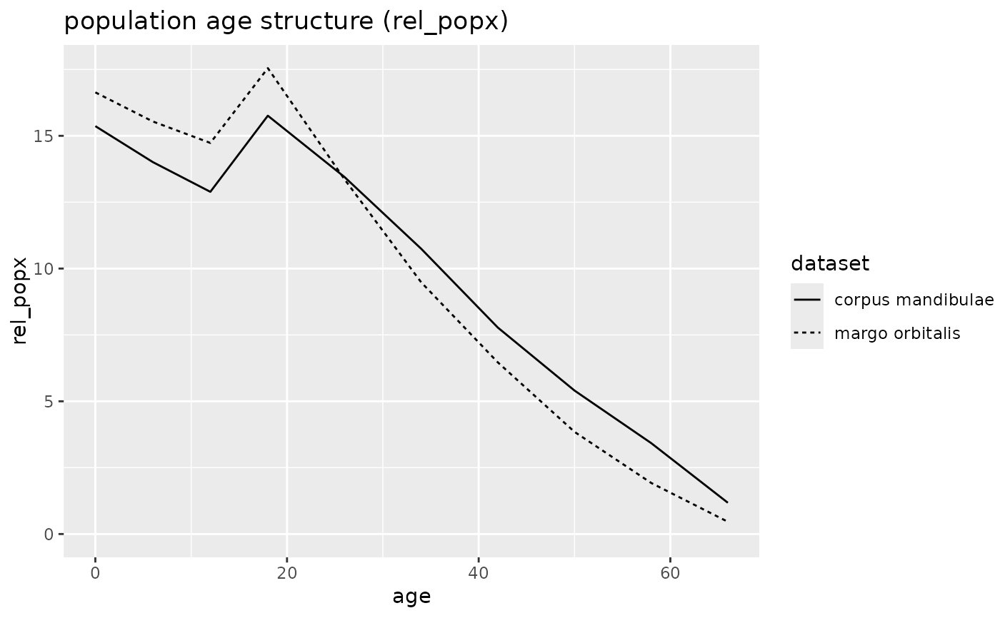
plot(odagsen, display = "lx", line_vis="color")
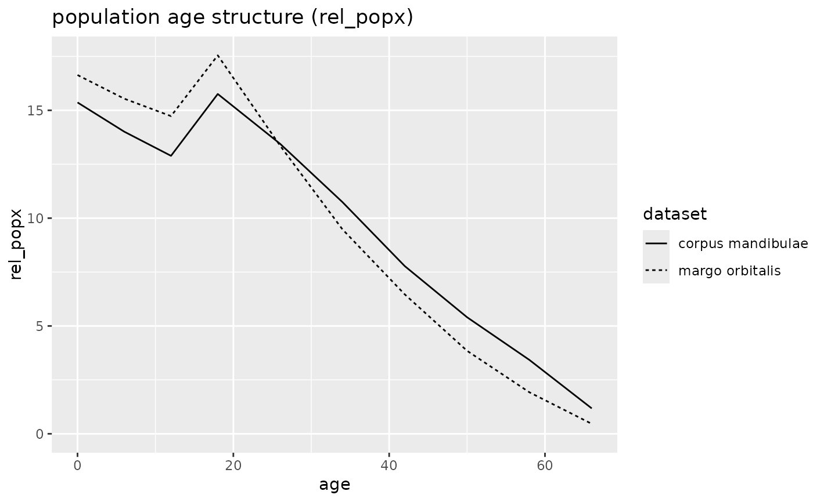
plot(odagsen, display = "lx", line_vis="color")